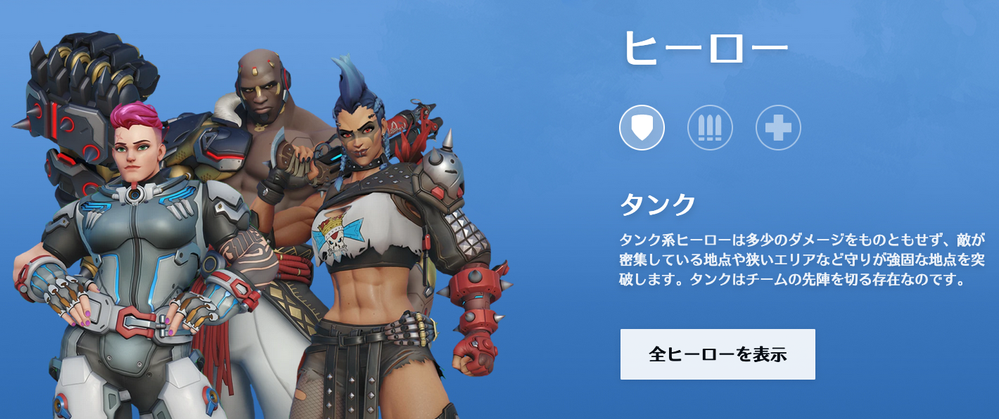
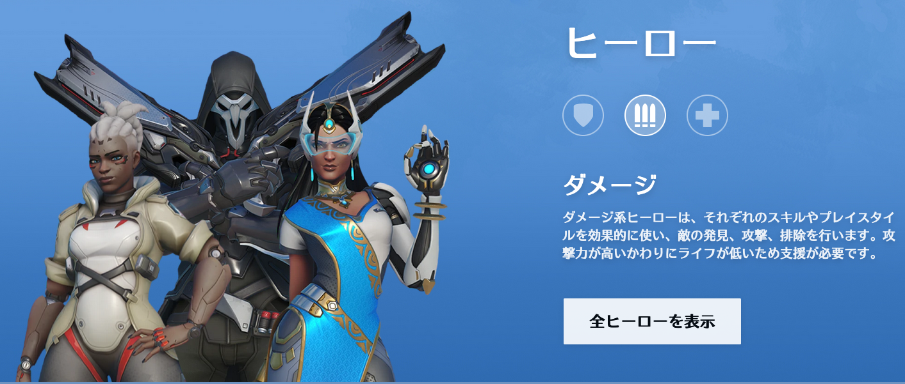
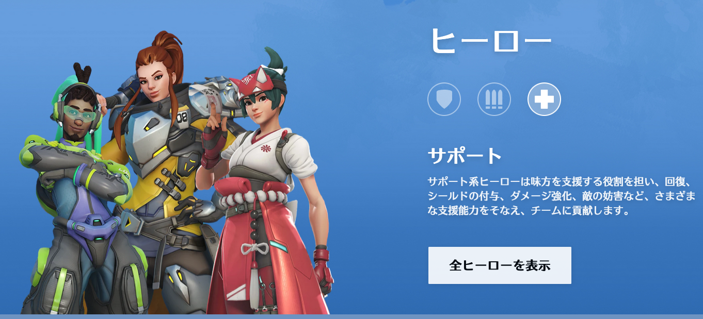
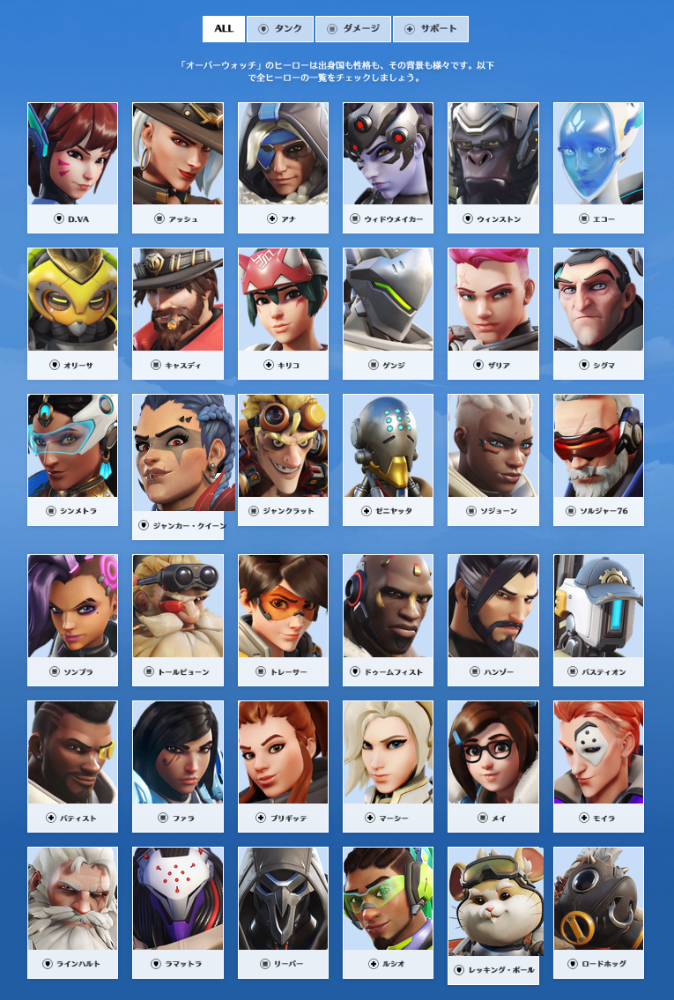
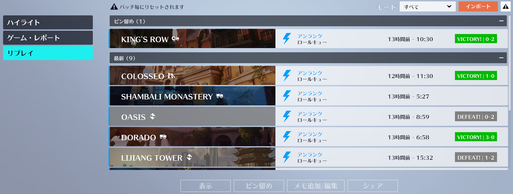

この記事は クラスター Advent Calendar 2022 カレンダー2の8日目の記事です。
昨日は RDAG のMermaidでasmdefを可視化するエディタ拡張をつくってあそぼう でした。
ごきげんよう。クラスター株式会社 ソフトウェアエンジニアの thara です。
最近はOverwatch2にハマっていて、深夜OW部と称して夜な夜なフレンドとパーティを組んでプレイしています。 完全にプライベートで楽しんでいるのですが、実際にプレイしたり解説動画を見たりしているうちにチーム開発との共通点を見出したので、それについて書こうと思います。
なお、本記事の内容はOverwatch歴2ヶ月未満、かつ独自研究というか半分ノリで書かれたものですので真に受けないようにお願いします。
勝利条件
Overwatch2は 5 vs 5 のチーム制のFPSゲームです。 ゲームモードには期間限定や日替わりのものもあり多彩ですが、基本的には「拠点制圧」と「護衛対象を特定の場所まで運ぶ」というものです。
ここで重要なのは、キル数、すなわち1プレイヤーがいくら敵を倒してもそれが勝利条件に直結しない、ということです。
もちろんキル数を稼ぐことで有利になることは確かですが、敵を倒すことにあまりに注力しすぎると、キル数やダメージ量は優っているのに勝利条件を満たせず敗北する、ということが少なからずあります。
キル数を稼ぐことを目的としていなくても、敵の対処に精一杯で拠点や護衛対象を放置してしまいそのまま敗北する、ということはよくあります。
Overwatchコミュニティでは、これを C9 と呼称しているようです。
Overwatch2の1マッチをチーム開発におけるマイルストーンとして捉えてみた時、開発チームはがそのマイルストーンの「勝利条件」をどう認識しているか、メンバー全員がその「勝利条件」を理解しているかが重要です。
例えば、以下のようなことを自問することで「勝利条件」への理解を深めることができるかもしれません。
- マイルストーンを設けた目的は？
- 複雑な問題の分解？
- リソースの最適化？
- 外部要因？
- マイルストーンの完了条件は？
- 予定された機能を全て実装すること？
- 次のマイルストーン開始のための条件を満たすこと？
- 初期の計画と差異が出ることをどう評価するのか？
キャラとロール
Overwatch2 には30を超えるキャラが存在します。
各キャラはタンク、ダメージ、サポートのいずれかのロールが割り振られており、基本的なゲームモードでは「タンク1人 + ダメージ2人 + サポート2人」の構成である必要があります。
  
https://overwatch.blizzard.com/ja-jp/
当然キャラごとに得手不得手があり、マップや味方ないし敵がピックした（選択した）キャラに相性が存在します。
ソフトウェア開発に当てはめると、キャラを操作するプレイヤーは開発者、キャラはわかりやすいところで言うとスキルセットですが、それだけではなくプログラマー風林火山 のような行動特性のようなものも考えられそうです。
キャラの相性は、ゲームモードやマップ・敵のピックははプロダクトの特性や市場動向・競合などの環境に、味方キャラのピックは開発チームの構成や組織構造などをパラメータとして考えられるでしょう。
チーム開発において、ある特定の環境下で有効に働く「キャラ」とは何か。
例えば、スタートアップでのMVP開発であればいかに早く作り上げ仮説検証するかが至上命題であるため、プロトタイプをサクッと作り上げられるようなキャラが重宝されるでしょう。しかし、そのようなキャラのみをピックし続けていた場合、PMF後にプロトタイプをベースにプロダクトを成長していこうと思った段階で中長期的な観点を品質に加味することができておらず、それが成長の足枷になってしまうことも考えられます。
ここで注目したいのは、Overwatchコミュニティでも意見が分かれるOTP(one trick player)、すなわち特定のキャラをピックし続けるプレイヤーの是非についてです。
初心者の場合、まずはゲームに慣れることが重要であるため特定のキャラを使い続ける、というのは間違ってはいないでしょう。 しかし、ある程度経験したプレイヤーであるならば、よほど突き抜けたセンスがない限りは、状況に応じてピックするキャラを変えた方が勝率は高くなります。
チーム開発も同様、そのマイルストーンの勝利条件を満たすために、状況に応じて開発者が「ピックするキャラ」を変えた方が好ましいかもしれません。
また、それぞれのキャラには「ロール」があります。 そして、それらのロールは相互に影響を与えています。
タンクが前に立つのをサポートがカバーする、タンクが敵のフォーカスを集めることでダメージが動きやすい状況を作る、など。
チーム開発のおいても、開発者が状況に応じたキャラをピックするだけでなく、それぞれのロールとその関係性を認識することで、コミュニケーションがより効率的に行えるかもしれません。
プレイヤーとキャラの相性
上記のように、一人の開発者がピックするキャラが多ければ多いほど、変化が大きい状況に耐えうるチーム開発ができる、と言えそうです。
一方で、Overwatch2でも1プレイヤーが30人超のキャラのスペックを100%出し切ることはプロでない限り（プロでも？）不可能だと思われるので、自分にとってどのキャラが合っているかの見極めが必要かな、と思います。

Overwatch2キャラクター一覧。多い... https://overwatch.blizzard.com/ja-jp/heroes
Overwatch2での自分を例に取ると、
- FPS歴15年超
- エイム力は（たぶん）並
- リコイルコントロール・追いエイムが苦手
- （OWではリコイルはほぼ感じないレベル）
- クイックショット・フリックショットはできる
- リコイルコントロール・追いエイムが苦手
- 敵の死角を取るのが得意
- 反射神経が極度に求められる状況は苦手（近接戦闘とか）
なので、以下のようなキャラをピックするとチームに貢献できている感じがします。
- ヒットスキャン（即着弾: 弾速考慮がない）
- マークスマンライフル（スナイパーライフルとアサルトライフルの中間みたいなやつ）を使用
- 前線ではなくちょっと後方や側面から攻撃する
- 味方をサポートする手段を多く持つ
チームでも開発も同様、自分自身にあったキャラを中心に、徐々に状況に応じた「キャラ」をピックできるようになっていけると良いのかな、と思います。
1人のプレイヤーがずば抜けたスキルを持っていたとしてもそれ以外のメンバーがそのキャラとの相性が悪かったり連携ができなかったりすると、チーム全体の総合力は落ちてしまいます。
自身がピックするキャラは、状況や他のメンバーの得意なキャラや実際にピックしたキャラなどを踏まえて、意識的にピックできると良さそうです。
リグループ
Overwatch2では1マッチ中ずっと継続的に戦うわけではなく、マッチ中に「波」があります。 それは人数が不利な状況で戦闘を起こしても負ける可能性が高いからです。
味方が倒されてからリスポーンするまでの間にはクールタイムがあります。 その間、チームは人数不利な状況で戦い続けなければなりません。 そのような負ける可能性が高い状況で戦い続け、さらに味方が倒されたとするとさらに窮地に陥ります。
これを避けるため、味方が倒された後に5人揃うまで安全な場所で待つという「リグループ」というテクニックがあり、これはOverwatch2で真っ先に初心者が理解すべきものです。
初心者が意識すべきこととして集団戦とリグループの重要性を上げるプロゲーマーta1yo氏
チーム開発においては、例えば後からメンバーがチームにジョインしてきた場合、必然的に既存メンバーと新規メンバーでは持っている情報に差異が生まれているわけですから、その差を緩和するために「リグループ」が必要でしょう。 メンバーがジョインしてないとしても開発が長引いた時は、メンバーのベクトルを合わせる目的の「リグループ」は効果的だと思います。
（それはそれとして、単なるデイリーミーティングやウィークリーミーティングよりも「リグループ」って言った方がちょっとかっこいいよね）
リプレイ
最後に、Overwatch2の特徴的な機能としてリプレイがあげられます。
リプレイとは、ゲーム終了後にそのゲームプレイを再生できる、と言うものです。 各プレイヤーの一人称視点だけではなく俯瞰視点でも見ることができます。 これを見直すことで、プレイ時には気づけなかった味方・敵チーム内の動きを知ることができ、自身やチームのプレイの反省に用いることができます。

リプレイコードを発行して他のユーザーのリプレイも再生できる
チーム開発においては、これはまさに「振り返り」です。
振り返りの重要性についてはさまざまな箇所で語られているのでここでは特に語りませんが、現状のチーム開発の「振り返り」は人間の記憶やSlack・GitHubなどの複数の記憶領域に分断されているため、精度という観点ではまだ課題がありそうです。
仮にメタバース上でチーム開発が完結するのであれば、かなりの精度の振り返りができそうです。
メタバース上で同期に伴う情報をログに取ってアーカイブし、それをリプレイすることができれば・・・
まとめ
ここまで駄文に付き合っていただいてありがとうございました。Overwatch2とチーム開発、意外な組み合わせですが、興味深い共通点もあったのではないでしょうか。
まぁでも、複数人が1つの目的に沿って行動する、というアクティビティであることにどちらも変わりはないので、これも当然かもしれません。
身近にあるチームプレイをチーム開発に応用、またはその逆ができないかと考えてみると、結構面白いので時間と興味がある方は試してみてください。
あぁそう、例えOverwatch2とチーム開発に共通点が見出せたとしても、業務時間内にOverwatch2をプレイすると普通に怒られが発生する可能性がかなり高いので注意してください。
現場からは以上です。
明日のクラスター Advent Calendar 2022 カレンダー2の9日目は @baku_dreameater の「個人開発でVRM 1.0の読み込みに対応した話」です。
お楽しみに！